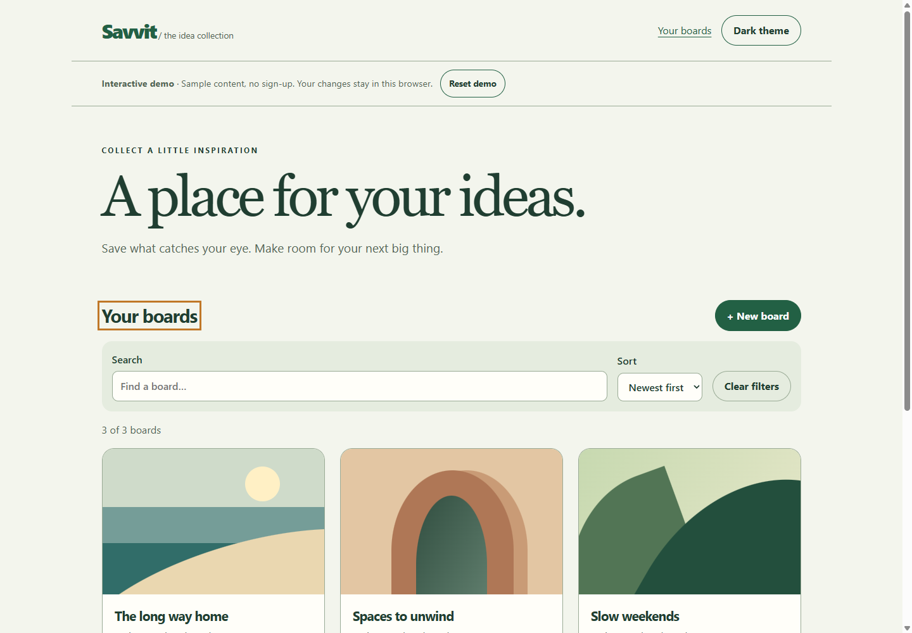

Savvit / Visual bookmarking
I am independently extending Savvit into a visual bookmarking workspace for images, ideas and useful links. The full application supports private, public and selectively shared boards with signed-in discovery. I have also built a standalone browser demo that anyone can explore without an account.
My redevelopmentI have extended pin uploads, metadata editing, search, saved references and moving owned originals between boards, alongside likes and threaded discussions. I have also added light, dark and system themes, saved appearance preferences, labelled forms and keyboard dialog focus management.
I started from our collaborative university web application, where I worked on authentication, MySQL-backed functionality and module testing. The original team work remains credited in the repository history.
My interactive demo supports sample boards, pin creation, search, likes, comments and saved references. Changes stay in your browser; Reset demo restores the samples. It does not use real accounts, shared permissions or MySQL. End-to-end verification of the full app against real MySQL remains outstanding.

I captured the live demo with its sample boards and illustrations. Changes stay in your browser; this demo does not connect to MySQL. View full-size screenshot.